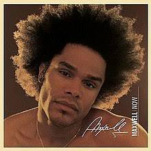
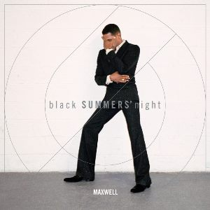

A few of Maxwell's most popular album's are as followed:
Now, 2001

-Get To Know You (Intro)
-Get To Know You
-Lifetime
-Was My Girl
-Changed
-NoOne
-For Lovers Only
-Temporary Night
-Silently
-Symptom Unknown
-This Womens Work (Uncut)
-Now/ At The Party
BLACKsummers'night, 2009
-Fistful Of Tears
-Pheonix Rise
-Playing Possum
-Love You
-Pretty Wings (Uncut)
-Stop The World
-Cold
-Help Somebody
-Bad Habits
blackSUMMERS'night, 2016

-Fingers Crossed
-Gods
-III
-Listen Hear
-The Fall
-All The Ways Love Can Feel
-Of All Kind
-Lost
-Night
-Lake By The Ocean
-1990x
-Hostage